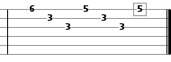
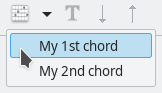
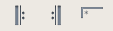
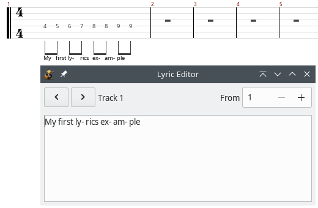

Each song consists of one or more tracks.
Each track is assigned to one instrument. Each instrument sounds the different way.
Before you start inserting notes into a new song, you have to adjust some settings. These are accessed through Composition menu.
Time signature has to be defined for each song. Usually it is 4/4, but sometimes it has some different value (3/4 for waltz, 7/8, etc.) Time signature applies for all the tracks. It can be changed in the middle of the song - when you change the value time signature will be changed from the current place in the song until the end.
Tempo is another value each song possess. It indicates how many beats (1/4 notes) song has in a minute - it is marked in BPM’s - Beats Per Minute. Tempo also applies for all the tracks in the song, and also can be changed. When you change the value tempo will be changed from the current place in the song until the end.
Clef affects the song display in scores. Clefs are used to mark the specific pitch of the note, so all other notes’ pitch can be determined. Clef is placed on the beginning of the scores. There are three types of clef supported in TuxGuitar: treble (default), bass, alto and tenor, which are the most usual clefs. Custom clefs are not supported. Clef can be changed in the middle of the song - when it’s changed the scores display changes from that position and further.
Key signature affects the way the notes are written in scores. They represent the current scale the song is written in, so there’s no need to constantly write sharp and flat marks. When you choose to change the key signature, dialog appears with existing key signatures. Natural, for example, represents the C-major, one flat represents F-major, etc.
Triplet feel (also: shuffle notes or swung notes) is the rhythmic device in which the duration of the initial note in a pair is augmented and that of the second is diminished. This effect is often used in jazz and blues music. TuxGuitar triplet feel divides the note par in 2:1 ratio. Triplet 8th divides a pair of 1/8 notes and Triplet 16th divides a pair of 1/16 notes into 2:1 ratio.
Track properties are the most important and should be adjusted for each track: track name, display color, instrument (from the list of instruments), number of strings and tuning. You can access this dialog by choosing Track/Properties in the main menu.
The most important property of a note is its duration. The sum of duration of all the notes in a measure is determined by the measure’s time signature. TuxGuitar has a system that protects the user of making an irregular measure (longer or shorter).
Therefore, every new 4/4 measure can contains only one whole note. When you select a duration of a note you want to enter, TuxGuitar adjusts all the pauses between the current position and the end of a measure (or the next note entered) so you can insert as many notes as possible.
You can change time signature in Composition→Time signature (or on 4/4 icon), and note duration in menu Note→Duration→(wanted duration). Note duration icons are also located on the main application toolbar.
You can change the current position of a note you want to enter by clicking on the desired location, or by navigating with arrows of a keyboard. Simply pressing the arrows left and right puts you on the next note in the current track, but Ctrl+(left or right) takes you to the previous or next measure.
Arrows up and down navigate you through the strings in tablature editor.

Tablature editor is represented by the number of the strings instrument possess. Each line is a string - when you type a number on a string [0 .. 29] editor puts on that string a note which is heard if you press a string on typed fret. The note has selected duration and dynamics you can modify afterwards.
If you navigate to an existing note (written as a number) and press Shift+(left or right) you will increase/decrease the pitch (fret) on the current string. If you press Shift+(up or down) you will move the fret value to the string up or down.
To be able to insert notes by clicking on the scores, you should be in the Score Edition Mode (you can change mode in Edit menu). When Score Edition Mode is enabled, you can check and uncheck the Sharp/Flat mode (in Edit menu, also) by which you can insert sharp notes.
Notes are inserted by left-clicking on the score’s line or between two lines. If you decide to write notes above or below five existing lines, aditional lines will appear. By clicking a note will appear on the selected place, and also in the tablature editor by appropriate number on appropriate string.
Very important property of a note is it’s dynamics: the “loudness” of a note. For each note you can put wanted dynamics.
When you create a note, it will have dynamics previously selected. If you click on other dynamics’ icon when positioned on existing note, the note will change its dynamics. In TuxGuitar dynamics is marked in standard manner (mp for mezzo-piano, fff for forte fortissimo etc.)
Dotted note has extended duration by 50%. It means that if you mark a 1/2 note as dotted, its duration will be 1/2 + 1/4 = 3/4.
Double dotted note has duration extended by 75%. That means that 1/4 double dotted note will have duration of 1/4 + 1/8 + 1/16 = 7/16.
When a note is played on the end of one measure but lasts in the next measure also, you have to use a tied note. You achieve the effect by putting the note on the end of a first measure and then put the same note on the beginning of next measure. Then you mark the second note as a tied note.
You can also use a tied note in the situation you need a note which has duration of a 5/16 note - a duration you cannot achieve by dotted or double dotted note. Then you tie a 1/4 and 1/16 note.
You can also put some notes into the song by inserting a chord. Chord’s duration and dynamics will be those currently selected.

You can insert a chord defined earlier (as on picture) or you can use chord wizard to generate a new chord (and even define a name for it for later use). Read more about Chord Editor dialog in other entry.
After writing the things you wanted, you will probably want to hear what’s done. After checking you will probably want to change something - listening and correction makes it perfect.
Playing guitar isn’t just playing a note in a right time. There are some little tricks we all use, like bend, palm mute etc. TuxGuitar supports most of them. Many effects are applied on the current note. Read more about Note effects in this help.
Sometimes in a song all the instrument are played the same way several times (e.g. in chorus). It is more elegant to mark that segment of a song for repetition than to copy/paste that passage again.
Repeat is set over one or more measures. It has a beginning, an end and information how many times to repeat. So if you want a passage to be played twice, you start repeat and end it on appropriate place. When asked how many times to repeat you should set 1 if you want it to be played twice.
Repeats are even more convenient to use with alternative endings - you define different ending measures for each repeat. So after you close a repeat and mark it as an alternative ending the editor will appear to select at which repeats this ending will play. It is a little hard to explain, but if you try the option you will find it self-explanatory.

TuxGuitar supports writing lyrics in a track, so you can make a track which contains lyrics and the melody of singing. Lyrics editor is accessed by selecting Track/Lyrics from the main menu.
The way the lyrics will be displayed depends on the content of the measure. Every word seperated by space or enter belongs to one note in a measure.

You have to select the number of a measure where lyrics start. When you type text, it starts below the first note in a measure you have set, and after each space or enter key the next word is displayed below the next note. Pauses are ignored. When you type text below every note in a measure, the text automatically move to the next measure.
If you want to have some notes without a text below, you should put more space characters.
Similar as lyrics, but the text is not tied to notes. It is most often used as a note to the player or a comment to tab. It is displayed above the note it is assigned to.
Well, probably not. But you have to write something to be able to write some more. You will probably want to add more instruments (tracks) and enter the wonderfull world of multi-track editing. :)
But even if you have only one track in a song, it is still a song. Song have some of its own properties and editing, so you should check section about editing a song.
The track for drums and percussions is treated a little bit differently in TuxGuitar than the other, “ordinary” tracks. It always has to be on MIDI channel 9 - that is achieved by checking the Percussion Track option in the Track→Properties. There is a special tool for editing the percussion track - besides the usual editing (by entering numbers on the tab), you can also use the Matrix Editor from Layout→Show_Matrix menu. Read more about Matrix Editor.